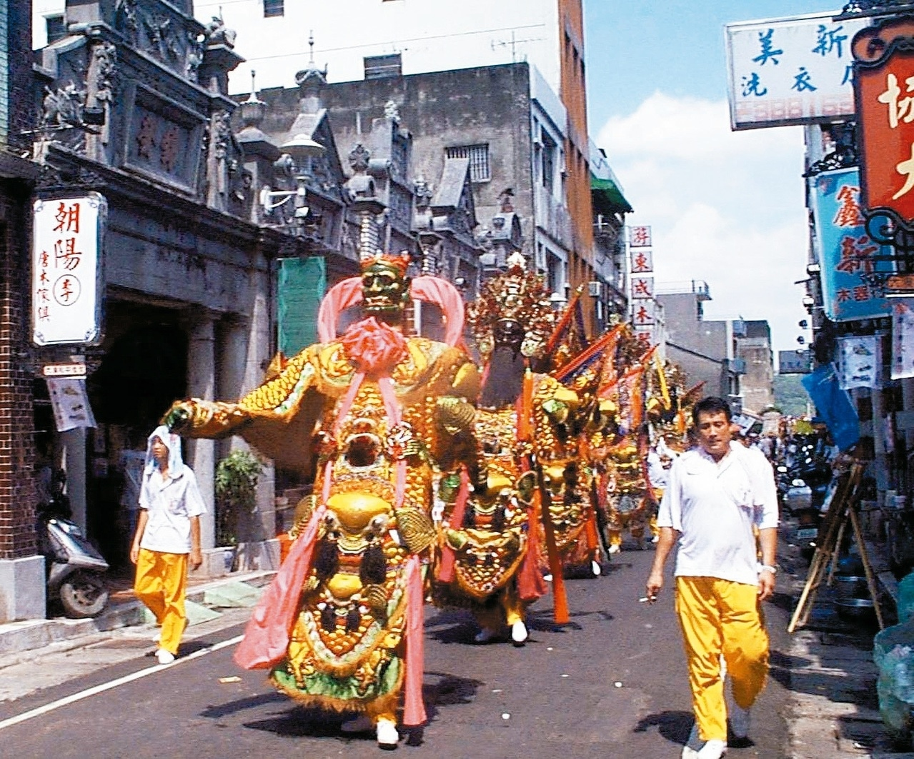

7 / 9 possibilities
Minnan!
Your definition of Taiwanese only includes people who speak the language "Taiwanese" which is a regional dialect of "Minnan, a Chinese tonal language. This idea was developed by Minnan people living in Taiwan as they used to be prohibited to speak their mother tongue due to the "Mandarin Movement" during the Martial law era of the Republic of China (ROC).
We consider ourselves unquestionably Taiwanese, sweet potato people, but also Hokkien/Minnan (Nanjing County, Fujian Province). ── Zhang Guangzhi (March 1998)
However, with the development of the "Taiwan Localization Movement", this "Mandarinism Supremacy" of the past was gradually replaced by the so-called "Minnan-chauvinism". That is to say, "Minnan Taiwanese (or just simply Taiwanese)" is the real Taiwanese language. Hakka culture and indigenous culture have once again become a minority and marginalized cultures hovering on the fringes of mainstream cultural discourse.